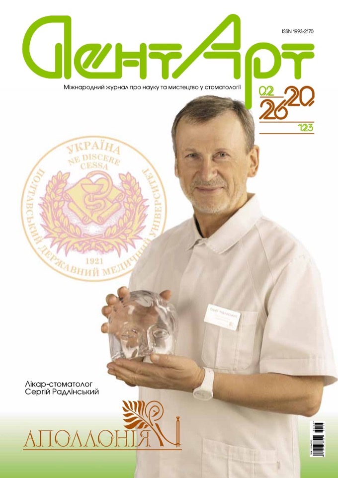

Оклюзія
Синхроміографія у системному відновленні оклюзії
Як визначення балансу жувальних м'язів допомагає у контрольованому відновленні зубів і зубних рядів.
Журнал про науку та мистецтво в стоматології
СХВАЛЕНО АСУ№ 2 (123) · квітень — червень 2026
Три авторські статті Сергія Радлінського про алгоритм, якому майже 25 років: синхроміографія у відновленні оклюзії та системна реновація реставрованих зубів. А у Вітальні засновник журналу вперше — не господар, а гість.

Оклюзія
Як визначення балансу жувальних м'язів допомагає у контрольованому відновленні зубів і зубних рядів.
Реставрація
Відновлення анатомічної форми раніше реставрованих зубів — реновація через 10 років експлуатації.
Реставрація
Техніка заміни зношеної частини зубів по завершенню строку служби реставрацій.
Імплантологія
Успіх імплантації у пацієнта з різною щільністю кісткової тканини — вибір системи та хірургічний протокол.
Терапія
Метод медикаментозного лікування із застосуванням препарату Траумель С — переваги перед традиційною терапією.
Вітальня
Засновник журналу вперше у Вітальні не господар, а гість: про минуле, нинішнє і майбутнє стоматології.
Естетика — це передусім математикаСергій Радлінський · головний редактор
Електронний доступ до всіх номерів з 2013 року — через сервіс наших партнерів.
4 номери
Річна передплата · друковане видання
ДентАрт — не стрічка новин. Це щоквартальне видання, де кожна стаття — завершене дослідження з клінічними фотографіями, схемами та висновками, до яких повертаються роками.
Передплатіть друковане видання або придбайте окремий номер.
ДентАрт виходить у Полтаві з 1995 року і присвячений естетичним аспектам прямої та непрямої реставрації, ортодонтії, ендодонтії, пародонтології та хірургії.
Журнал має практичну спрямованість: сучасні технології та матеріали, детальні клінічні протоколи, майстер-класи від провідних фахівців України та світу. Схвалений Асоціацією стоматологів України.
Наша редакційна рада об'єднує фахівців з України, Італії, Великої Британії, Молдови, Грузії, Латвії та Литви.